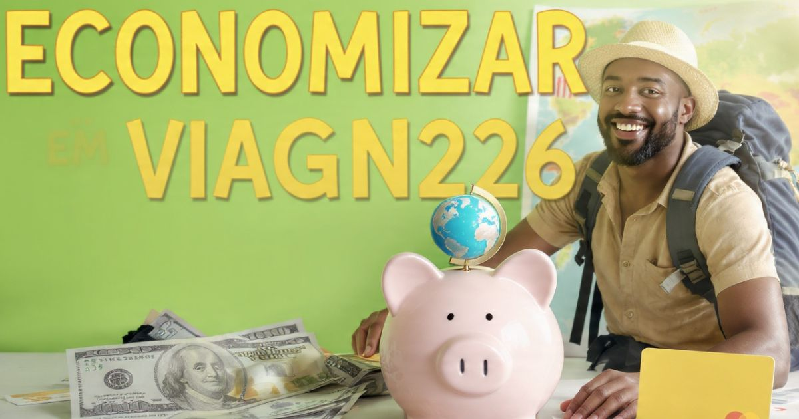

Como economizar em viagens internacionais 2026: guia completo
Introdução: viajar bem sem gastar uma fortuna
Viajar para o exterior é o sonho de muitas pessoas, mas o custo pode ser um grande obstáculo. Passagens aéreas, hospedagem, alimentação, transporte e atrações podem facilmente ultrapassar o orçamento planejado se você não tomar os cuidados certos. No entanto, com planejamento, pesquisa e algumas estratégias inteligentes, é possível viajar para o exterior gastando muito menos do que você imagina.
Em 2026, existem mais oportunidades do que nunca para economizar em viagens internacionais. Desde passagens aéreas promocionais até hospedagens alternativas, passando por dicas de alimentação e transporte, as opções são variadas e acessíveis para todos os perfis de viajantes.
Neste guia completo sobre como economizar em viagens internacionais, você vai encontrar dicas práticas e comprovadas para reduzir os custos da sua viagem: passagens aéreas, hospedagem, alimentação, transporte, atrações, câmbio e muito mais. Tudo isso sem abrir mão da qualidade e da experiência.
Nosso objetivo é que você possa realizar o sonho de viajar para o exterior sem comprometer seu orçamento, aproveitando cada momento da viagem com tranquilidade e economia.

Viajar bem não precisa custar uma fortuna
Dicas para economizar em passagens aéreas
As passagens aéreas costumam ser o maior custo de uma viagem internacional. Confira dicas para economizar:
Reserve com antecedência: O preço das passagens aéreas tende a subir quanto mais próximo da data de embarque. O ideal é reservar com 2 a 3 meses de antecedência para voos internacionais.
Seja flexível com as datas: Voar em dias de semana (terça, quarta, quinta) é geralmente mais barato que nos finais de semana. Evite viajar em feriados e alta temporada.
Use comparadores de preços: Sites como Google Flights, Skyscanner e Kayak permitem comparar preços de diferentes companhias aéreas e encontrar as melhores ofertas.
Ative alertas de preço: Ative alertas de preço no Google Flights ou Skyscanner para ser notificado quando o preço da passagem cair.
Considere voos com escalas: Voos diretos são mais caros que voos com escalas. Considere uma escala para economizar.
Compre em milhas: Se você tem cartão de crédito com programa de milhas, use suas milhas para comprar passagens aéreas.
Compre em moeda local: Ao comprar passagens online, verifique se a cotação em real (R$) é mais vantajosa que em dólar ou euro.
Dica bônus: O momento de compra também influencia. Estudos mostram que as terças-feiras à tarde costumam ter preços mais baixos.
Dicas para economizar em hospedagem
A hospedagem é o segundo maior custo da viagem. Confira como economizar:
Use comparadores de preços: Sites como Booking.com, Airbnb, Hostelworld e Agoda permitem comparar preços de diferentes opções de hospedagem.
Considere hospedagens alternativas: Hostels, albergues, apartamentos no Airbnb, casas de família (couchsurfing) são opções mais baratas que hotéis tradicionais.
Reserve com antecedência: Assim como as passagens, os preços dos hotéis tendem a subir próximo à data da viagem.
Fique em bairros periféricos: Hospedar-se em bairros afastados do centro pode ser significativamente mais barato, e você pode se locomover com transporte público.
Considere hotéis com café da manhã incluso: Isso pode economizar uma refeição por dia.
Fique em hostels com cozinha compartilhada: Cozinhar suas refeições pode economizar muito dinheiro.
Dica bônus: Programas de fidelidade de hotéis podem oferecer descontos e benefícios para hóspedes frequentes.
Dicas para economizar em alimentação
Comer fora pode ser um dos maiores gastos da viagem. Confira como economizar:
Coma em mercados e feiras: Os mercados e feiras locais são mais baratos que restaurantes e oferecem comida autêntica.
Evite restaurantes em áreas turísticas: Os restaurantes perto de atrações turísticas costumam ser mais caros.
Almoce em vez de jantar: O almoço costuma ser mais barato que o jantar na maioria dos destinos.
Compre alimentos em supermercados: Comprar frutas, pães, queijos e outros alimentos em supermercados pode economizar muito dinheiro.
Leve lanches na mochila: Leve lanches e garrafa de água para evitar comprar alimentos caros durante o dia.
Dica bônus: Em muitos destinos, a comida de rua (street food) é deliciosa e muito mais barata que restaurantes tradicionais.
Dicas para economizar em transporte
O transporte local pode ser um grande gasto. Confira como economizar:
Use transporte público: Metrô, ônibus e trens são muito mais baratos que táxis e aplicativos.
Compre passes diários: Muitas cidades oferecem passes diários ou semanais de transporte público, que são mais econômicos que comprar bilhetes avulsos.
Caminhe: Caminhar é gratuito, saudável e permite descobrir detalhes que você perderia de outra forma.
Use bicicletas compartilhadas: Muitas cidades têm sistemas de bicicletas compartilhadas com preços acessíveis.
Evite táxis e aplicativos: Em vez disso, use o transporte público.
Dica bônus: Em algumas cidades, a compra de passes de transporte combinados com ingressos para atrações pode gerar economia.
Dicas para economizar em atrações e passeios
Visitar atrações turísticas pode ser caro. Confira como economizar:
Compre ingressos online: Ingressos comprados online costumam ser mais baratos que na bilheteria.
Compre passes turísticos: Os passes turísticos (como Paris Pass, London Pass, etc.) incluem entrada para várias atrações e podem gerar economia.
Visite atrações gratuitas: Muitos museus e atrações têm entrada gratuita em determinados dias ou horários.
Faça tours gratuitos: Tours a pé (free walking tours) são uma ótima forma de conhecer a cidade com um guia local sem gastar muito.
Dica bônus: Pesquise antes de viajar sobre os dias de entrada gratuita dos museus.
Dicas para economizar em câmbio
O câmbio pode consumir uma parte significativa do orçamento. Confira como economizar:
Use cartões pré-pagos: Cartões como Wise, Nomad e Revolut têm taxas de câmbio mais baixas que cartões de crédito tradicionais.
Evite comprar moeda em espécie no aeroporto: As taxas de câmbio no aeroporto são as mais altas.
Use cartões sem taxas de saque: Alguns cartões pré-pagos oferecem saques gratuitos em ATM.
Dica bônus: Prefira pagar em moeda local em vez de reais para evitar a conversão desfavorável da operadora do cartão.
Melhor época para viajar com economia
A época da viagem influencia diretamente os custos. Confira dicas:
Evite alta temporada: Os preços são mais altos em alta temporada (férias, feriados, verão europeu, etc.).
Viaje na baixa temporada: Os preços são mais baixos em baixa temporada (outono, inverno).
Considere a entressafra: As épocas de entressafra (primavera, outono) têm preços mais baixos que a alta temporada.
Dica bônus: Viaje em dias úteis em vez de finais de semana.
Dicas gerais para economizar em viagens
- Planeje com antecedência: O planejamento é a chave para economizar.
- Pesquise muito: Pesquise sobre o destino, os preços e as melhores épocas para viajar.
- Seja flexível: Seja flexível com datas, destinos e horários.
- Leve menos bagagem: Evite pagar taxas extras por bagagem despachada.
- Use aplicativos de economia: Aplicativos como Trivago, Skyscanner e Booking.com podem ajudar a encontrar as melhores ofertas.
- Aproveite a natureza e os espaços públicos: Parques, praias e espaços públicos são gratuitos.
- Leve seus próprios snacks: Leve lanches para evitar comprar alimentos caros.
A economia em viagens começa com planejamento e pesquisa! Reserve passagens e hospedagem com antecedência, use comparadores de preços e seja flexível com as datas. Com essas dicas, você pode viajar para o exterior gastando muito menos do que imagina!
❓ Perguntas Frequentes sobre como economizar em viagens
A melhor forma é reservar com antecedência (2-3 meses), ser flexível com datas (voar em dias de semana), usar comparadores de preços (Google Flights, Skyscanner) e ativar alertas de preço.
Use comparadores de preços, considere hospedagens alternativas (hostels, Airbnb), fique em bairros periféricos, reserve com antecedência e escolha hotéis com café da manhã incluso.
Sim, para quem vai visitar várias atrações. Os passes turísticos (Paris Pass, London Pass, etc.) incluem entrada para várias atrações e transporte, e podem gerar uma economia significativa.
A baixa temporada (outono, inverno) e a entressafra (primavera, outono) têm os melhores preços. Evite alta temporada (verão europeu, férias, feriados).
Coma em mercados e feiras, evite restaurantes em áreas turísticas, almoce em vez de jantar, compre alimentos em supermercados e experimente a comida de rua (street food).
Cartões pré-pagos como Wise, Nomad e Revolut são ótimos, com taxas de câmbio baixas e IOF reduzido. Evite cartões de crédito com taxas de câmbio altas.
Sim, em parte. Leve uma quantia em dólar ou euro para despesas imediatas, mas evite comprar no aeroporto, onde as taxas são mais altas. Use cartões pré-pagos para a maior parte dos gastos.
Use transporte público (metrô, ônibus, trem), compre passes diários ou semanais, caminhe, use bicicletas compartilhadas e evite táxis e aplicativos.